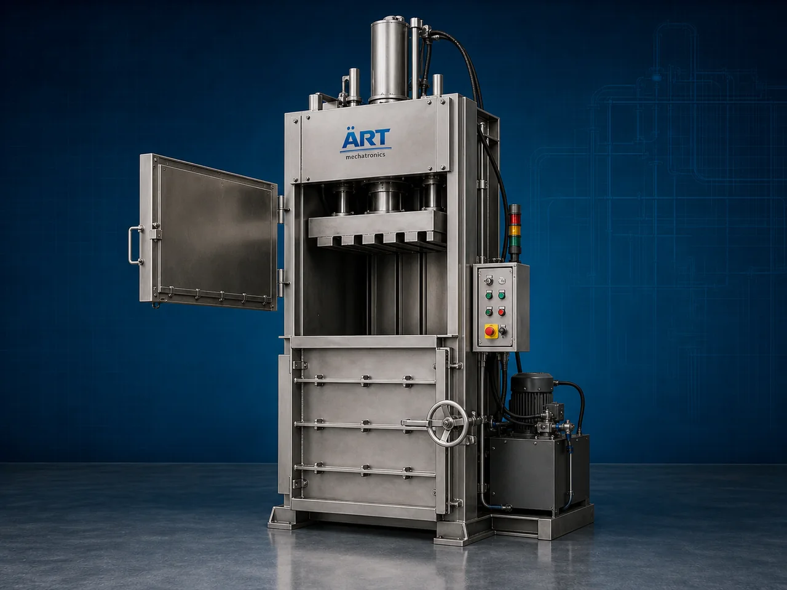

Hydraulic Press / Baling Press Machine (Industrial Compression & Baling System)
A Hydraulic Press Machine, also known as a Baling Press Machine, Hydraulic Compression Machine, Industrial Baler, or Hydraulic Compaction System, is an advanced industrial processing solution designed for compression, baling, compacting, shaping, forming, waste reduction, and high-pressure…

About the Hydraulic Press/ Bailing Press
Hydraulic press and baling systems are widely used for: ✔ Industrial waste compression ✔ Paper and cardboard baling ✔ Plastic scrap compaction ✔ Metal scrap pressing ✔ Cotton and textile baling ✔ Biomass compression operations ✔ Product shaping and forming ✔ Storage and logistics optimization
The machine improves: ✔ Material density and compactness ✔ Storage efficiency ✔ Transportation efficiency ✔ Waste handling productivity ✔ Labor reduction ✔ Industrial cleanliness ✔ Recycling and process efficiency
Industrial hydraulic press machines use: ✔ High-pressure hydraulic cylinders ✔ Heavy-duty compression chambers ✔ PLC and HMI automation controls ✔ Hydraulic power pack systems ✔ Rugged steel structural frames
to compress and compact materials with superior force, precision, and high industrial productivity.
Hydraulic press and baling machines are widely used in industries such as:
Recycling industries Paper industries Plastic industries Metal industries Textile industries Biomass industries Agro industries Industrial manufacturing industries
where high-pressure compression, waste reduction, and efficient material handling are essential.
The machine is highly suitable for: ✔ Waste recycling operations ✔ Scrap compaction systems ✔ Biomass baling operations ✔ Industrial material compression ✔ Warehouse and logistics optimization ✔ Industrial forming and pressing systems
ART Mechatronics offers high-performance hydraulic press and baling machines, engineered for continuous industrial operation, rugged compression performance, energy-efficient hydraulics, and reliable long-term industrial productivity.
Working Principle of Hydraulic Press / Baling Press Machine
- 1. Material Feeding & Loading Process Scrap materials, waste products, biomass, or industrial materials are loaded into compression chamber manually or automatically.
- 2. Hydraulic Compression Process Machine uses high-pressure hydraulic cylinders and power pack systems to compress materials into dense and compact bales or formed shapes.
Advanced hydraulic technology ensures powerful and uniform compression operations.
- 3. Pressing & Baling Operation Machine handles compression of: ✔ Paper and cardboard ✔ Plastic scrap ✔ Metal scrap ✔ Cotton and textiles ✔ Biomass materials ✔ Agro waste ✔ Foam and packaging waste ✔ Industrial recyclable materials
accurately and continuously.
- 4. Compaction & Density Enhancement Process Machine performs: Baling Compaction Compression Shaping Volume reduction Material densification
for efficient industrial recycling and material handling operations.
- 5. Intelligent Automation & Safety Integration Optional systems include: Automatic bale tying systems Conveyor feeding systems Oil cooling systems Safety interlock systems Remote monitoring systems
- 6. Finished Bale & Material Discharge Compressed bales discharged automatically for: Storage operations Transportation logistics Recycling plants Export shipment handling Industrial reuse operations
Types of Hydraulic Press / Baling Press Machines
- 1. Vertical Baling Press Machine Designed for: ✔ Small to medium industrial waste compaction applications
- 2. Horizontal Hydraulic Baler Machine Suitable for: ✔ High-capacity industrial recycling operations
- 3. Metal Scrap Hydraulic Press Uses: ✔ Heavy-duty metal compression and recycling systems
- 4. Paper & Cardboard Baling Machine Designed for: ✔ Packaging waste and paper recycling operations
- 5. Biomass Baling Press Machine Suitable for: ✔ Agro waste and biomass compaction applications
- 6. Fully Automatic Hydraulic Baling System Designed for: ✔ Complete industrial recycling automation lines
Industries Using Hydraulic Press / Baling Press Machines
♻️ Recycling Industry Waste compaction, scrap recycling, and material densification systems. 📦 Packaging Industry Cardboard and packaging waste baling operations. 🧴 Plastic Industry Plastic scrap compaction and recycling systems. ⚙️ Metal Industry Metal scrap pressing and industrial recycling operations. 🧵 Textile Industry Cotton and textile waste baling systems. 🌾 Biomass & Agro Industry Biomass fuel preparation and agro waste compaction systems.
Features & Advantages
✔ High-pressure hydraulic compression operation ✔ Accurate and uniform material compaction systems ✔ Heavy-duty industrial construction ✔ PLC and automation control systems ✔ Improves storage and transportation efficiency ✔ Reduces waste handling volume and labor dependency ✔ Supports multiple recyclable and industrial materials ✔ Reliable long-term industrial performance ✔ Smooth integration with industrial recycling lines
Technical Highlights
Machine Type: Hydraulic press machine Baling press system Industrial compression machine Material Compatibility: Paper and cardboard Plastic scrap Metal scrap Cotton and textiles Biomass materials Agro waste Industrial recyclable products Integration: Hydraulic power pack systems Compression cylinders Automatic feeding conveyors Bale discharge systems Features: PLC control system Touchscreen HMI Heavy-duty steel construction Oil cooling systems Safety interlock systems Applications: Material compression Baling Waste compaction Scrap recycling Volume reduction Industrial material handling Automation: Semi-automatic Fully automatic industrial systems
Turnkey Hydraulic Press Solutions
ART Mechatronics offers: Complete hydraulic press and baling systems Automatic waste compaction solutions Industrial recycling and handling systems Conveyor and automation integration systems Installation & commissioning After-sales service & AMC
Why Choose Art Mechatronics
Expertise in industrial hydraulic and automation systems Customized compression solutions for multiple industries High-performance and rugged hydraulic technology Advanced PLC and automation systems Proven industrial recycling performance across sectors
Applications
Recycling Plants Paper & Packaging Industries Plastic Recycling Units Metal Scrap Processing Facilities Textile Manufacturing Plants Biomass Processing Industries
Industries that use the Hydraulic Press/ Bailing Press
Related Process Equipment machines
Get pricing & specs for the Hydraulic Press/ Bailing Press
Share the product, target capacity, current process and plant location. These details help our engineers discuss the right machine or line configuration.
One partner, from design to start-up
ART Mechatronics designs, manufactures, installs and commissions your Hydraulic Press/ Bailing Press solution with regional presence in India, UAE and Thailand.